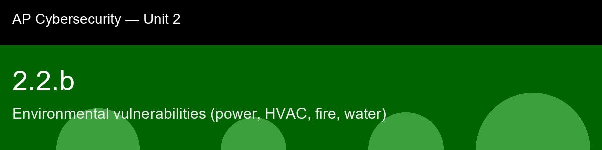

2.2.b recap, Environmental vulnerabilities (power, HVAC, fire, water)
Nice work today. Here's what to lock in:
- Recap handout:
post-lecture-handout.docx
- Simulation: SimLab
- Self-check quiz: due before next class
The big picture: The detail that should stick with you is the fire-suppression paradox: the default tool for putting out a fire (water) is also one of the most effective tools for permanently destroying the exact hardware you're trying to save. That's a perfect example of a control designed for one context becoming a threat in another, which is a pattern you'll see again and again in security. The fix (clean-agent suppression) isn't a fancier version of a sprinkler, it's a completely different mechanism chosen because the ordinary solution actively backfires here. When you evaluate any control in this course, always ask: does this control assume a context that doesn't apply here?
Key terms to lock in:
- Uninterruptible power supply (UPS), a battery-backed unit that provides short-term power during an outage or dip, bridging the gap until generators start or power is restored.
- N+1 redundancy, a design principle where at least one extra unit of a critical system (power, cooling) exists beyond the minimum required, so a single failure does not cause an outage.
- HVAC (heating, ventilation, and air conditioning), the system that regulates temperature and humidity to keep hardware within safe operating conditions.
- Clean-agent fire suppression, a fire-extinguishing system (e.g., FM-200, inert gas) that removes oxygen or interrupts combustion without damaging electronics, unlike water sprinklers.
- Raised flooring, elevated flooring in a data center that both routes cabling/cooling air and protects equipment from shallow flooding at slab level.
Common misconceptions -- don't fall for these:
- "Environmental risk isn't really a cybersecurity topic." → A power, cooling, fire, or water failure produces the same availability (and sometimes integrity) loss as a targeted cyberattack; AP Cybersecurity's Analyze Risk skill treats all threats to CIA equally regardless of whether an adversary is involved.
- "Sprinklers are fine for a server room like anywhere else in the building." → Water-based sprinklers actively destroy electronics; data centers use clean-agent suppression specifically because a false alarm or a real fire should not itself become a total-loss event.
- "As long as there's a backup generator, power is a solved problem." → A generator that has not been load-tested and does not have fuel contracts in place is a false sense of security; the UPS-to-generator handoff window and generator runtime under real load must be validated regularly.
Learning objective(s): 2.2.A

## 2.2.b recap, Environmental vulnerabilities (power, HVAC, fire, water)
Nice work today. Here's what to lock in:
- Recap handout: `post-lecture-handout.docx`
- Simulation: SimLab
- Self-check quiz: due before next class
**The big picture:** The detail that should stick with you is the fire-suppression paradox: the default tool for putting out a fire (water) is also one of the most effective tools for permanently destroying the exact hardware you're trying to save. That's a perfect example of a control designed for one context becoming a threat in another, which is a pattern you'll see again and again in security. The fix (clean-agent suppression) isn't a fancier version of a sprinkler, it's a completely different mechanism chosen because the ordinary solution actively backfires here. When you evaluate any control in this course, always ask: does this control assume a context that doesn't apply here?
**Key terms to lock in:**
- **Uninterruptible power supply (UPS)**, a battery-backed unit that provides short-term power during an outage or dip, bridging the gap until generators start or power is restored.
- **N+1 redundancy**, a design principle where at least one extra unit of a critical system (power, cooling) exists beyond the minimum required, so a single failure does not cause an outage.
- **HVAC (heating, ventilation, and air conditioning)**, the system that regulates temperature and humidity to keep hardware within safe operating conditions.
- **Clean-agent fire suppression**, a fire-extinguishing system (e.g., FM-200, inert gas) that removes oxygen or interrupts combustion without damaging electronics, unlike water sprinklers.
- **Raised flooring**, elevated flooring in a data center that both routes cabling/cooling air and protects equipment from shallow flooding at slab level.
**Common misconceptions -- don't fall for these:**
- "Environmental risk isn't really a cybersecurity topic." → A power, cooling, fire, or water failure produces the same availability (and sometimes integrity) loss as a targeted cyberattack; AP Cybersecurity's Analyze Risk skill treats all threats to CIA equally regardless of whether an adversary is involved.
- "Sprinklers are fine for a server room like anywhere else in the building." → Water-based sprinklers actively destroy electronics; data centers use clean-agent suppression specifically because a false alarm or a real fire should not itself become a total-loss event.
- "As long as there's a backup generator, power is a solved problem." → A generator that has not been load-tested and does not have fuel contracts in place is a false sense of security; the UPS-to-generator handoff window and generator runtime under real load must be validated regularly.
**Learning objective(s):** 2.2.A